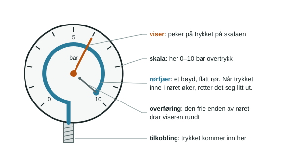
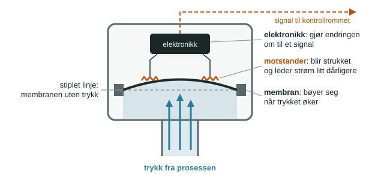
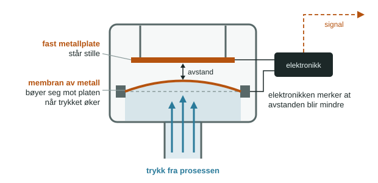
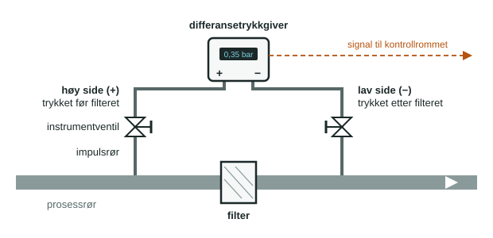
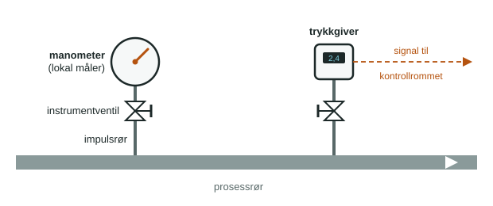

Trykkmåling
Trykk er en av de målingene du ser oftest i et prosessanlegg. Trykket viser om en pumpe går som den skal, om et filter er i ferd med å tettes, og om en tank er trygg. Her lærer du hvordan et manometer og en trykkgiver virker, hvordan de monteres, og hvordan du oppdager at en trykkmåler viser feil.
Hvorfor måler vi trykk?
Noen eksempler fra anlegget:
- Etter en pumpe viser trykket om pumpa går og gir det den skal. Faller trykket plutselig, kan pumpa ha stoppet eller suge luft.
- I en tank eller reaktor må trykket holdes under det tanken tåler. Det er et spørsmål om sikkerhet.
- Over et filter viser trykkforskjellen om filteret er rent eller begynner å tettes.
- I damp- og trykkluftledninger må trykket være riktig for at utstyret skal virke.
De fleste trykkmålere i anlegget viser overtrykk, altså trykket i forhold til lufta rundt. Forskjellen på overtrykk og absolutt trykk lærer du på siden Kraft og trykk i Fysiske prinsipper.
Manometeret
Den vanligste lokale trykkmåleren er et manometer med viser og skala. Det trenger verken strøm eller ledninger, og det sitter overalt i anlegget.

Inne i manometeret sitter et bøyd, flatt metallrør som kalles en rørfjær. Røret er festet i tilkoblingen i den ene enden og lukket i den andre. Trykket fra prosessen kommer inn i røret. Når trykket øker, prøver røret å rette seg ut, omtrent som en oppblåsbar «festblåser». Den frie enden flytter seg litt, og en liten mekanisme gjør bevegelsen om til at viseren går rundt.
Mange manometre er fylt med en klar væske, ofte glyserin. Væsken demper viseren så den ikke dirrer når det er vibrasjoner eller trykket svinger, for eksempel nær en pumpe. Da blir det lettere å lese av, og måleren slites mindre.
Trykkgiveren
Et manometer må leses av på stedet. Skal trykket vises i kontrollrommet, brukes en trykkgiver. Den måler trykket og sender verdien som et elektrisk signal til styresystemet.
Inne i en trykkgiver sitter en tynn plate, en membran. Trykket fra prosessen presser på membranen, så den bøyer seg litt. Elektronikk i giveren måler hvor mye membranen bøyer seg, og gjør det om til et signal. Hvordan signalet ser ut, og hvordan det kommer fram til kontrollrommet, lærer du i emnet Signaler og instrumentering.
Det er to vanlige måter å måle hvor mye membranen bøyer seg på.
Piezoresistiv trykkmåler

I en piezoresistiv trykkmåler sitter det små elektriske motstander på selve membranen. En motstand er en liten elektrisk del som gjør det litt vanskeligere for strømmen å komme gjennom. Når membranen bøyer seg, blir motstandene strukket litt, og motstanden deres endrer seg. Elektronikken merker endringen og regner ut trykket. «Piezo» kommer fra et gresk ord som betyr å trykke eller presse, og «resistiv» betyr at det er motstanden som endrer seg.
Piezoresistive trykkmålere er små, robuste og rimelige. De er svært vanlige i prosessindustrien. Nivåmåleren i bunnen av tank 1 i pumperommet er en slik måler, se Nivåmåling.
Kapasitiv trykkmåler

I en kapasitiv trykkmåler er membranen av metall, og like ved den sitter en fast metallplate. To metallplater som står nær hverandre, kan holde på litt elektrisk ladning når det er spenning mellom dem. Evnen til å holde på ladning kalles kapasitans. Jo nærmere platene står, jo større er kapasitansen. Når trykket øker, bøyer membranen seg nærmere platen, og kapasitansen øker. Elektronikken måler endringen og regner ut trykket.
Kapasitive trykkmålere er svært nøyaktige og er mye brukt når forskjellen mellom to trykk skal måles, se Differansetrykk under.
Mange trykkgivere har også et lite display, så du kan lese av verdien på stedet.
Differansetrykk
Noen ganger vil vi vite forskjellen mellom to trykk. Da brukes en differansetrykkmåler. Den har to tilkoblinger og viser hvor mye høyere trykket er på den ene siden enn på den andre.
Et vanlig eksempel er et filter. Når filteret er rent, er trykket nesten like høyt før og etter. Etter hvert som filteret fylles med partikler, blir det tyngre å presse væsken gjennom, og trykket etter filteret blir lavere enn før. Differansetrykket stiger. Når det når en grense, er det på tide å bytte eller rense filteret.
En differansetrykkmåler som sender verdien til kontrollrommet, kalles en differansetrykkgiver.

Inne i en differansetrykkmåler er det, forenklet sagt, to kamre med en membran imellom. Det ene kammeret får trykket fra høy side, merket +, og det andre fra lav side, merket −. Er trykket like stort på begge sider, står membranen rett. Er det større på høy side, bøyer membranen seg mot lav side. Hvor mye den bøyer seg, måles på samme måte som i en vanlig trykkgiver, ofte kapasitivt.
Det er viktig at rørene fra prosessen kobles til riktig side. Byttes de om, viser måleren feil: et negativt differansetrykk, eller 0 hvis den bare kan vise positive verdier. Da blir et filter som tettes, ikke oppdaget.
Differansetrykk brukes også til å måle nivå og mengde. Det lærer du på sidene Nivåmåling og Mengdemåling.
Slik monteres en trykkmåler

En trykkmåler skrus sjelden rett inn i prosessrøret. Mellom røret og måleren er det vanligvis
- et impulsrør: et tynt rør som fører trykket fra prosessen fram til måleren
- en instrumentventil: en liten ventil som stenger av måleren fra prosessen
Med instrumentventilen kan du stenge av og bytte en måler uten å stoppe hele anlegget. På damprør sitter det ofte også en bøyd rørsløyfe, en sifong, foran manometeret. Der blir det stående kondensvann som beskytter måleren mot den varme dampen.
Velg riktig måleområde
Hver trykkmåler har et måleområde, for eksempel 0–10 bar. Velg en måler der det vanlige trykket ligger omtrent midt på skalaen. Da kan du lese av nøyaktig, og måleren tåler at trykket av og til blir høyere. Står viseren hele tiden helt nede, er avlesningen unøyaktig. Står den helt oppe, kan måleren bli ødelagt.
Oppgave: Etter en pumpe er trykket vanligvis 4 bar, men det kan bli opp mot 6 bar når en ventil lenger ute stenges. Du kan velge mellom manometre med måleområde 0–4 bar, 0–10 bar og 0–100 bar. Hvilket velger du?
Løsning:
- 0–4 bar: Det vanlige trykket står helt i toppen av skalaen, og 6 bar er utenfor. Måleren kan bli ødelagt.
- 0–100 bar: 4 bar er bare en liten bit av skalaen. Viseren flytter seg nesten ikke, og du kan ikke lese av nøyaktig.
- 0–10 bar: 4 bar er under halve skalaen, og 6 bar er godt innenfor.
Svar: Manometeret med 0–10 bar.
Når trykkmåleren viser feil
Vanlige feil på trykkmålere er:
- Tett impulsrør. Partikler, belegg eller frossen væske tetter det tynne røret. Måleren viser da et trykk som ikke endrer seg, selv om trykket i prosessen gjør det.
- Stengt instrumentventil. Noen har glemt å åpne ventilen etter et bytte. Måleren viser 0 eller et gammelt trykk som er stengt inne.
- Ødelagt måler. Har manometeret vært utsatt for mye høyere trykk enn det er laget for, kan rørfjæren ha fått varig skade. Da viser det ikke 0 når trykket er borte.
- Væske i impulsrøret. Sitter måleren lavere enn målepunktet, og impulsrøret er fullt av væske, presser væsken i røret på måleren. Måleren viser da for høyt.
Oppgave: Et manometer skal vise trykket på toppen av en tank, men det er montert 5 m lenger ned, ved gulvet, så det er lett å lese av. Impulsrøret er fullt av vann. Hvor mye for høyt viser manometeret?
Løsning: Vannet i impulsrøret står 5 m høyt over manometeret. Tommelfingerregelen fra siden Trykk i væsker er at 10 m vann gir ca. 1 bar. Da gir 5 m vann ca. 0,5 bar.
Svar: Manometeret viser ca. 0,5 bar for høyt. Viser det 1,7 bar, er trykket på toppen av tanken bare ca. 1,2 bar. En trykkgiver kan stilles inn slik at den trekker fra væskesøylen. For et manometer må du regne den ut selv, eller flytte måleren opp til målepunktet.
Når et anlegg er stoppet og trykket er tatt av, skal et manometer vise 0 bar, så sant det ikke står en væskesøyle i impulsrøret over det. Viser det noe annet, er det noe galt med måleren eller tilkoblingen, for eksempel trykk som er stengt inne bak instrumentventilen. Sammenlign også gjerne manometeret med trykket på skjermen i kontrollrommet. Er de svært ulike, viser en av dem feil.
- Skru aldri løs en trykkmåler før instrumentventilen er stengt og trykket mellom ventilen og måleren er sluppet ut etter prosedyren.
- Et manometer som viser 0, kan være tett eller ødelagt. Stol ikke på det alene når du skal åpne utstyr.
- Husk å åpne instrumentventilen igjen etter arbeidet, og sjekk at måleren viser et rimelig trykk.
- Et manometer med sprukket glass eller en viser som ikke går tilbake til 0, skal meldes og byttes.
Test deg selv
Hva skjer med rørfjæren i et manometer når trykket øker?
- Den trekker seg sammen.
- Den retter seg litt ut.
- Den blir varm.
Trykket inne i det bøyde, flate røret får det til å rette seg litt ut. Den frie enden flytter seg og drar viseren rundt.
Trykket er vanligvis 4 bar. Hvilket manometer passer best?
- 0–4 bar
- 0–10 bar
- 0–60 bar
Det vanlige trykket bør ligge omtrent midt på skalaen. Med 0–10 bar står 4 bar litt under midten. Med 0–4 bar er måleren helt i toppen, og med 0–60 bar blir avlesningen unøyaktig.
Differansetrykket over et filter har steget mye den siste uka. Hva betyr det mest sannsynlig?
- Filteret har fått hull.
- Filteret begynner å bli tett.
- Pumpa har stoppet.
Når filteret fylles med partikler, blir det tyngre å presse væsken gjennom. Trykket etter filteret faller, og forskjellen mellom før og etter øker.
Anlegget er stoppet og trykket er tatt av, men manometeret viser 0,3 bar. Hva gjør du?
- Ingenting, det er bare litt.
- Trekker fra 0,3 bar hver gang du leser av.
- Melder fra, fordi måleren viser feil og må sjekkes eller byttes.
Uten trykk skal manometeret vise 0. Viser det noe annet, kan rørfjæren være skadet, eller det kan være trykk stengt inne i impulsrøret. Måleren må sjekkes.
Hva er instrumentventilen til?
- Den regulerer trykket i prosessrøret.
- Den stenger av måleren, så den kan byttes uten å stoppe anlegget.
- Den slipper ut trykket hvis det blir for høyt.
Instrumentventilen sitter mellom prosessen og måleren. Når den er stengt, kan måleren tas av. Det er sikkerhetsventilen som slipper ut trykket hvis det blir for høyt.
Ordliste
| Begrep | Forklaring | Engelsk |
|---|---|---|
| manometer | Instrument som måler trykk, vanligvis overtrykket. | pressure gauge |
| rørfjær | Bøyd, flatt metallrør inne i et manometer. Det retter seg litt ut når trykket øker, og flytter viseren. | Bourdon tube |
| trykkgiver | Instrument som måler trykket og sender verdien som et elektrisk signal til styresystemet. | pressure transmitter |
| membran | Tynn, bøyelig plate som bøyer seg litt når trykket presser på den, for eksempel i en trykkgiver. | diaphragm |
| overtrykk | Trykket i forhold til lufttrykket rundt oss. Det er dette en vanlig trykkmåler viser. Skrives ofte barg. | gauge pressure |
| piezoresistiv trykkmåler | Trykkmåler med små elektriske motstander på membranen. Når membranen bøyer seg, endrer motstandene seg litt, og det gjøres om til et signal. | piezoresistive pressure sensor |
| kapasitiv trykkmåler | Trykkmåler der en membran av metall og en fast metallplate står nær hverandre. Når trykket øker, kommer membranen nærmere platen, og kapasitansen mellom dem øker. Det gjøres om til et signal. | capacitive pressure sensor |
| differansetrykk | Forskjellen mellom to trykk, for eksempel trykket før og etter et filter. | differential pressure (DP) |
| impulsrør | Tynt rør som fører trykket fra prosessen fram til en måler. | impulse line |
| instrumentventil | Liten ventil mellom prosessen og en måler. Når den er stengt, kan måleren tas av. | instrument valve |
| måleområde | Området mellom laveste og høyeste verdi et instrument kan måle, for eksempel 0–10 bar. | measuring range |
Les mer
- Kraft og trykk og Trykk i væsker i Fysiske prinsipper forklarer hva trykk er, og forskjellen på overtrykk og absolutt trykk.
- Tanker og beholdere i Enhetsoperasjoner viser hvor manometer og sikkerhetsventil sitter på en trykkbeholder.
Om kildene: Teksten, eksemplene, figurene og skissene på denne siden er laget for dette nettstedet. Siden bygger på undervisningsopplegg i kjemiprosess- og laboratoriefag ved Sauda vgs, som er utarbeidet med utgangspunkt i blant annet Kjemien stemmer, Laboranten og åpne nettkilder.